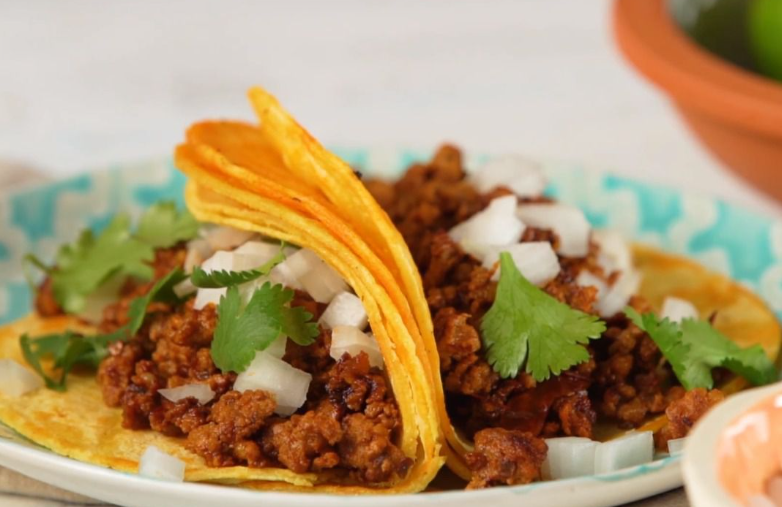

Chorizo Tacos

Ingredients
- 1 chorizo sausage link, casing removed and meat crumbled
- 2 tablespoons chipotle peppers in adobo sauce
- 4 corn tortillas
- 2 tablespoons chopped onion, or to taste
- 2 tablespoons chopped fresh cilantro, or to taste (Optional)
Steps
- Combine crumbled chorizo and chipotle peppers in adobo sauce in
a bowl.
- Heat a skillet over medium-high heat; add chorizo mixture and
cook until crisp, 5 to 7 minutes. Transfer to a plate, reserving
grease in the skillet.
- Heat tortillas in reserved grease in the skillet over medium
heat until warmed, 1 to 2 minutes per side. Stack 2 tortillas
for each taco, then fill with chorizo, onion, and cilantro.